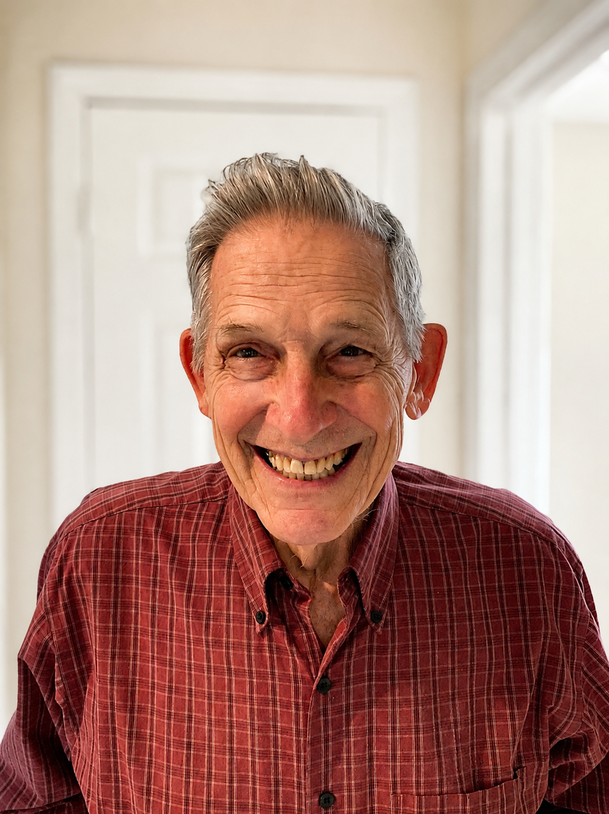

In loving memory of
With love and gratitude
from the family.
In lieu of flowers, please consider a
donation to The Hospice of East Texas.
Celebrating the life of

Vincent Oscar Gustave Piotet was born on February 23, 1935, in the Canton de Vaud, Switzerland, the fourth of five children of Dr. Gustave Piotet and Renée Chavannes. He was captivated from boyhood by trains, electronics, and how things worked. He graduated from the Swiss Polytechnic Institute in Zurich in 1960 with a degree in Electrical Engineering. Music stayed with him all his life: he taught himself piano and guitar entirely by ear and dearly loved jazz.
In 1960 he married Anne Angelique Chavannes, who had first found him by following the sound of his guitar at a party—they were married 57 years until her passing in 2017. He once bet friends he would marry the most beautiful woman in the world, and he won. The couple moved to America, where Vince worked for General Electric on power systems for America's first satellite program and later in GE's pioneering computer department. They raised three daughters—Marguerite, Jennifer, and Jacqueline—and settled in Dallas, Texas.
In 1974, searching for answers, Vince and Anne began visiting a small church, and their humble curiosity about Jesus led the whole family to faith. Through the years that followed he continued to work in technology development, spending much of his career as a systems analyst and never losing his fascination with how things worked. In 2000 they moved to East Texas to be near their children and grandchildren. Beginning in 2005, Vince volunteered at the Hospice of East Texas, singing and playing guitar for patients several times a week, almost until the very end of his life at 91 years old. His schedule of church, Bible study, workouts, and dinners with family and dear friends was always full, and he loved spending time with his grandchildren and great-grandchildren.
Those who knew him best will remember him for the faithfulness with which he loved God, played his music, and remained endlessly curious to learn more about the beautiful world God made.
www.vincepiotet.com
Please join us for a reception on the 2nd floor immediately following the service.